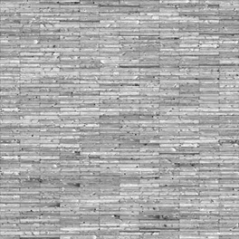
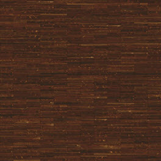
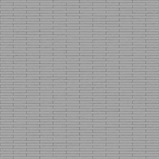
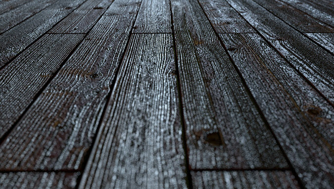
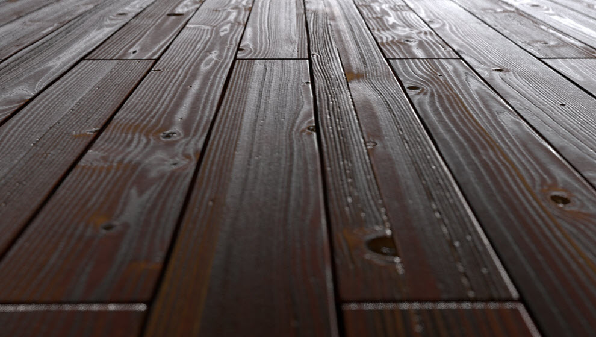

第 1 部分 - 设置场景
本教程介绍如何使用连接到 standard_surface 着色器的高分辨率漫反射、凹凸和镜面反射贴图重新创建上面的渲染。我们将使用天穹灯光创建木材材质中的逼真镜面反射。
下面是本示例中使用的木材纹理。
|
|
|
|  |
 |
 |
| 镜面反射贴图 |
漫反射贴图 |
凹凸贴图 |
- 为楼板创建多边形平面，并为其指定一个 standard_surface 着色器。
- 创建一个 skydome_light， 并将一个 HDR 贴图连接到它的 color 属性。
标准曲面
- 将漫反射贴图连接到 base_color 属性。
- 将镜面反射贴图连接到 specular_color 和 specular_weight 属性。
- 将凹凸贴图连接到“凹凸贴图”(Bump Mapping)属性。
凹凸贴图
这里只需要一个非常细微的凹凸深度值。
|
|
|  |
 |
| 凹凸深度：1（过大） |
凹凸深度：0.1 |